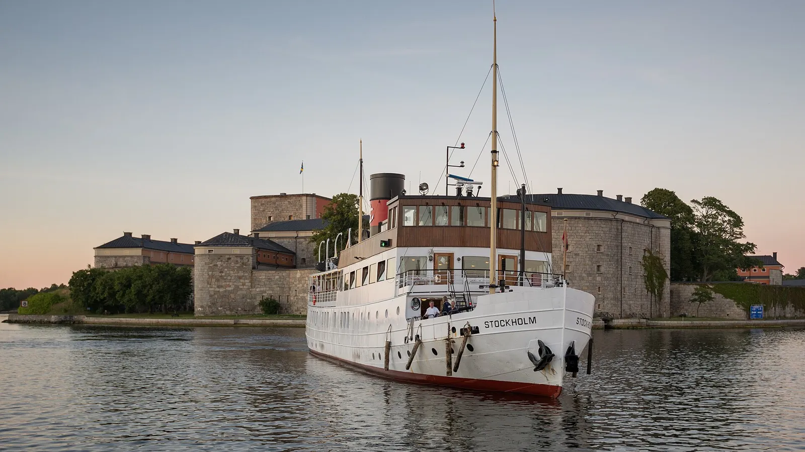
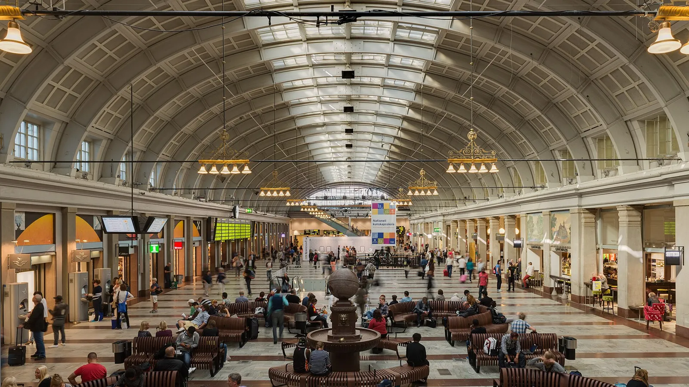
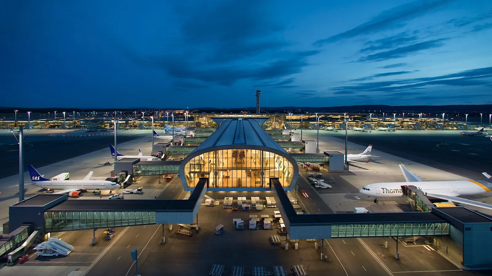
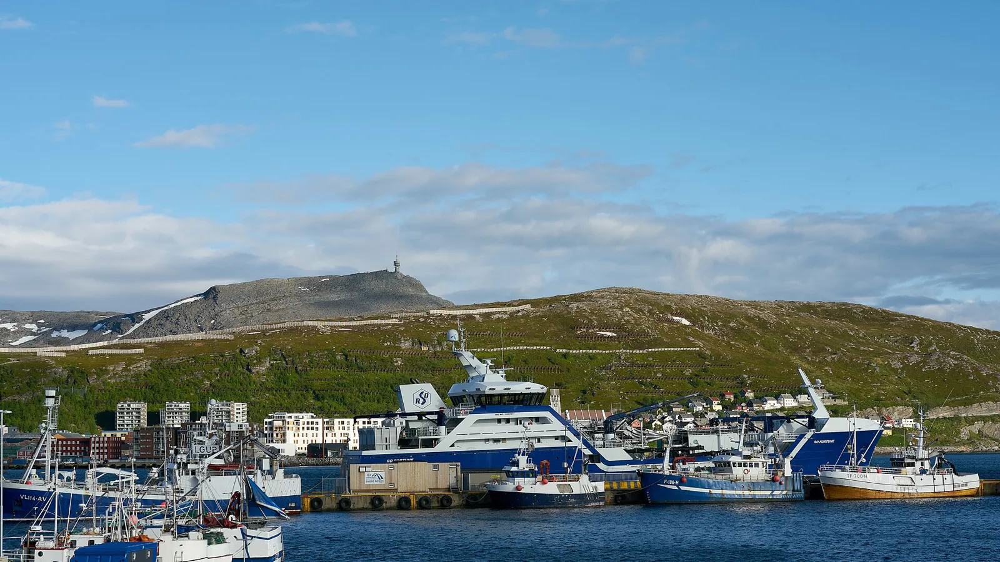
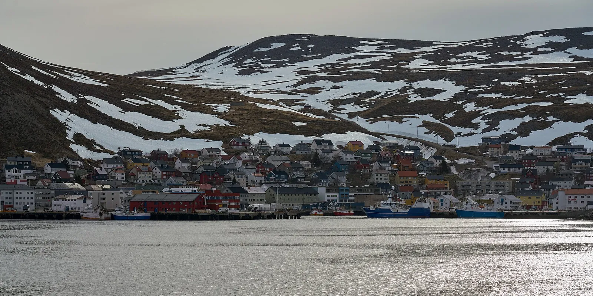
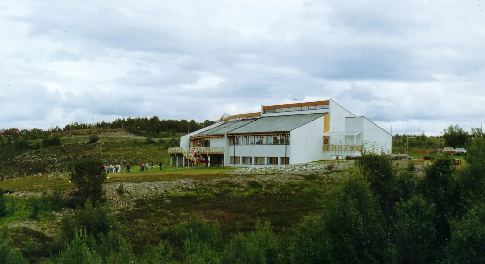
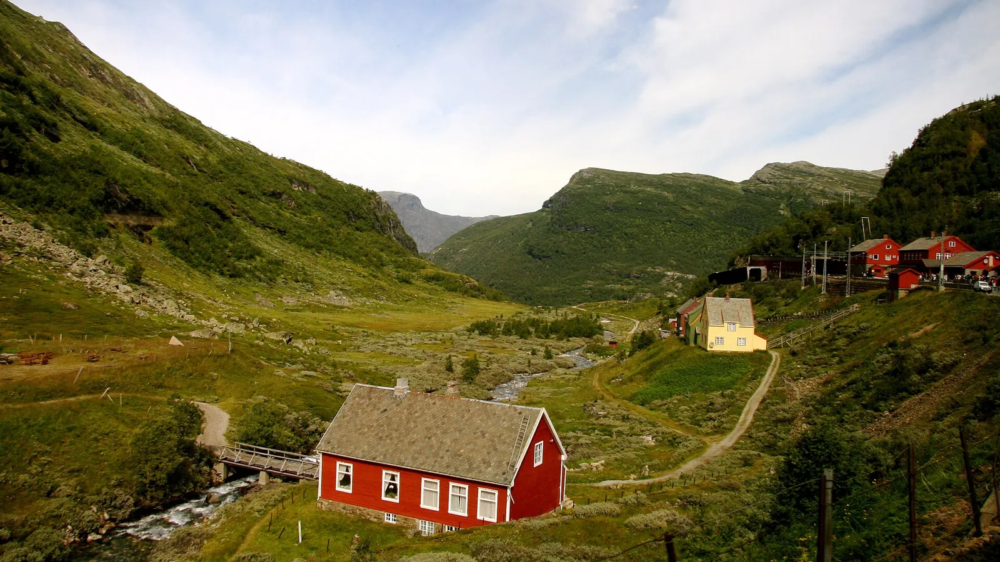
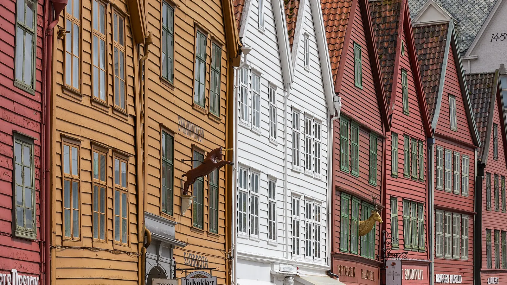
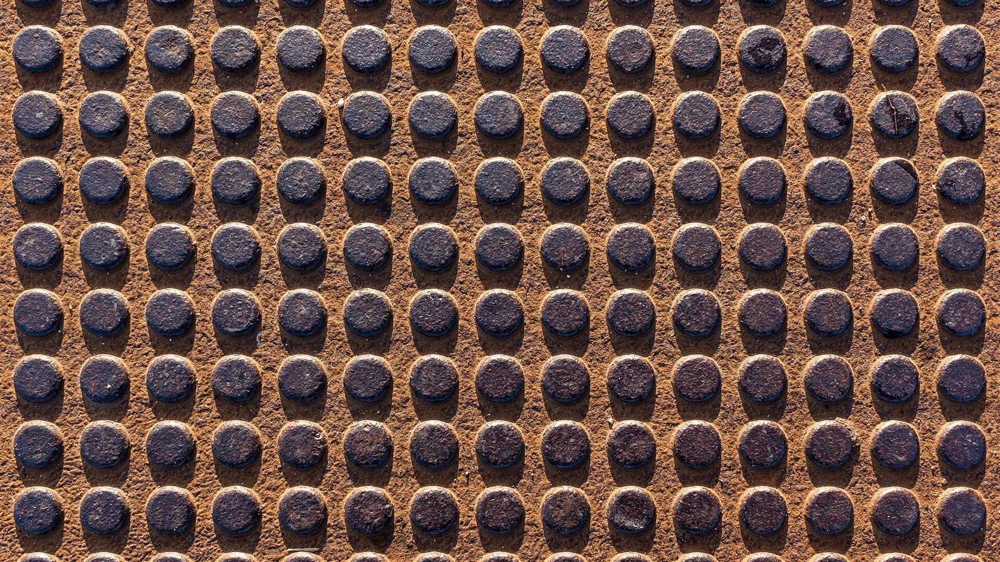
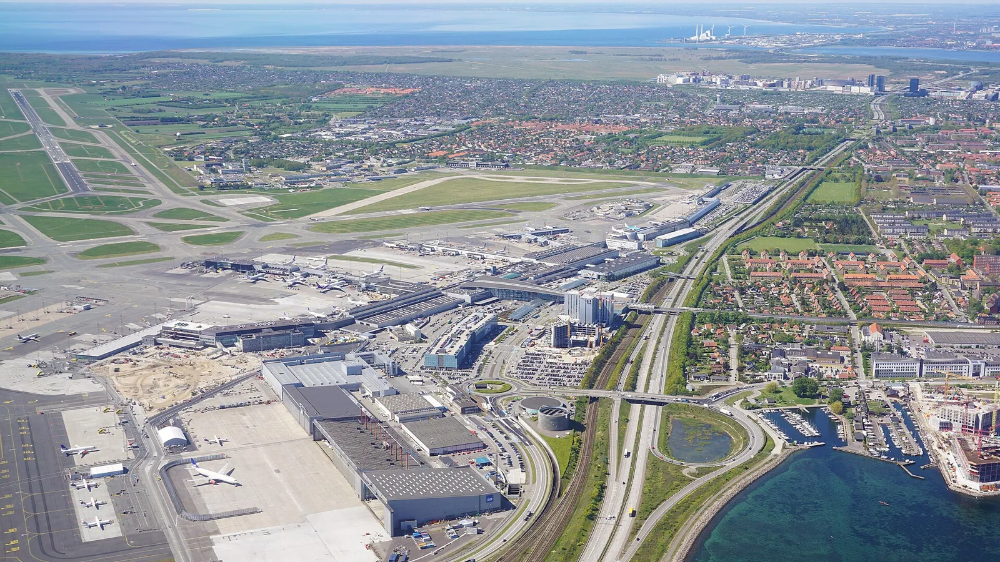

Our grand Scandinavian loop with an Arctic extension. After Helsinki, the Baltic crossing and Stockholm, a scenic train to Oslo, you fly north to Alta for Hammerfest, sail on the Hurtigruten coastal ship to Honningsvåg and stand on the North Cape cliff at the top of Europe. Back south via Alta's Stone Age rock carvings, you take Norway in a Nutshell to Bergen and finish in Copenhagen. Buses in the far north run on fixed timetables, sometimes only on certain weekdays, so we fix your dates around them.
See it for yourself
Photos from the journey












Day by day, in short
Daily travel brief
Distances are by road for the whole day. The full plan with timings comes with your detailed itinerary.
-
1
-
2
Helsinki city tour and the overnight ship to Stockholm
Sibelius Monument Temppeliaukio Church
- Board the overnight ship: check-in closes about 1 hour before departure.
- Ask for a vegetarian dinner when we book; the buffet has salads and hot vegetarian dishes.
-
3
Sail into Stockholm
Stockholm City Hall Gamla Stan
- Stockholm is built on 14 islands; walking is the best way between them.
-
4
Scenic train to Oslo
- Oslo Opera House and Aker Brygge: the Viking Ship Museum is closed for rebuilding and reopens as the Museum of the Viking Age in about 2027.
- Seat reservations are included; buy snacks before boarding.
-
5
Fly to Alta and on to Hammerfest
- Bus or express boat to Hammerfest: buses and boats run on fixed times; some only on certain weekdays.
- In summer the sun does not set here; bring an eye mask.
-
6
Hurtigruten to Honningsvåg and the North Cape
- Hurtigruten coastal ship: an early start; be at the quay 30 minutes before.
- North Cape: even in July it can be 5°C and windy at the cliff.
-
7
Bus to Alta
- Bus from Honningsvåg to Alta: reindeer wander onto the road.
- Sami culture is strong here; ask before photographing people in traditional dress.
-
8
Alta rock carvings and fly to Oslo
- The rock trail is gravel and boardwalk; comfortable shoes.
-
9
Norway in a Nutshell to Bergen
- A long day; we can split it with a night in Flåm if you prefer.
-
10
-
11
Fly to Copenhagen
-
12
Copenhagen
Amalienborg The Little Mermaid
- Tivoli Gardens: tivoli is closed for parts of the year; check the season for your dates.
- Copenhagen is best by bike or on foot.
-
13
Fly home from Copenhagen
- Transfer to Copenhagen Airport: be at the airport 3 hours before an international flight.
- Claim the VAT refund at the airport for purchases over the minimum.
Local know-how
Travel hacks from our desk
Hotel deposit
Use a credit card for the deposit or pre-authorisation at check-in, never a forex or debit card. Forex cards cannot hold funds, many hotels refuse them, and a credit-card hold is released faster.
Cards and cash
On card machines, always choose to pay in the local currency (euros in Finland, Swedish, Norwegian and Danish kronor elsewhere), never in INR. Scandinavia is almost cashless: cards and phone payments work everywhere, even for toilets and market stalls. You need little or no cash.
Pickpockets
Busy stations, trams and squares are pickpocket hotspots. Keep passports in the hotel safe, carry a copy, and wear your bag in front in crowds.
Plugs, water and meal times
Plugs are the two round-pin type C and F at 230 volts (Switzerland uses type J; a type C plug fits). Tap water is safe to drink. Lunch is about 12:00 to 14:00 and dinner from about 18:30.
When to go
Best time to visit for this journey
June and early July.
Mid-May to late July for the midnight sun at the North Cape. Hurtigruten sails all year, but northern buses run less in winter.
The package
What's included
Included
- 12 nights with breakfast
- Overnight ship Helsinki to Stockholm with dinner
- City tours in Helsinki, Stockholm and Copenhagen
- Train Stockholm to Oslo
- Flights Oslo to Alta and back, and Bergen to Copenhagen
- Hurtigruten Hammerfest to Honningsvåg
- North Cape bus excursion
- Norway in a Nutshell
- 24/7 support from Blue Diamond Voyage
Not included
- International flights
- Schengen visa
- Bus or boat Alta to Hammerfest and bus Honningsvåg to Alta (bought locally; we give you the times)
- North Cape Hall entry
- Lunches and dinners
- Travel insurance
The detailed itinerary
Some journeys are planned. Ours are crafted.
The full 13-day plan is ready: hour-by-hour timings, drive times, temple dress codes, food for your diet and a route map for every day. Tell us your dates and your city, and we'll send it to you on WhatsApp, shaped around you.
- Hour-by-hour timings
- A route map for every day
- Hotel and room details
- Visa and entry steps
- Vegetarian and Jain dining
24/7 travel desk+91 97148 59797+91 98242 21400
Photo and map credits
- Helsinki Airport: Ввласенко, CC BY-SA 3.0, via Wikimedia Commons
- Senate Square: Tyg728, CC BY-SA 4.0, via Wikimedia Commons
- Stockholm archipelago: Arild Vågen, CC BY-SA 4.0, via Wikimedia Commons
- Stockholm Central: Arild Vågen, CC BY-SA 3.0, via Wikimedia Commons
- Oslo Airport: Avinor Oslo lufthavn/Espen Solli, CC BY 3.0, via Wikimedia Commons
- Hammerfest: Virtual-Pano, CC BY-SA 4.0, via Wikimedia Commons
- Honningsvåg: Virtual-Pano, CC BY-SA 4.0, via Wikimedia Commons
- Alta Museum: Hans Olav Lien, CC BY-SA 3.0, via Wikimedia Commons
- Myrdal: Jenni Douglas, CC BY 2.0, via Wikimedia Commons
- Bryggen: JoachimKohler-HB, CC BY-SA 4.0, via Wikimedia Commons
- Bergen Airport: Varde / Avinor, CC BY 3.0, via Wikimedia Commons
- Nyhavn: Dietmar Rabich, CC BY-SA 4.0, via Wikimedia Commons
- Copenhagen Airport: kallerna, CC BY-SA 4.0, via Wikimedia Commons
- Maps: © OpenStreetMap contributors; road routes by OSRM.